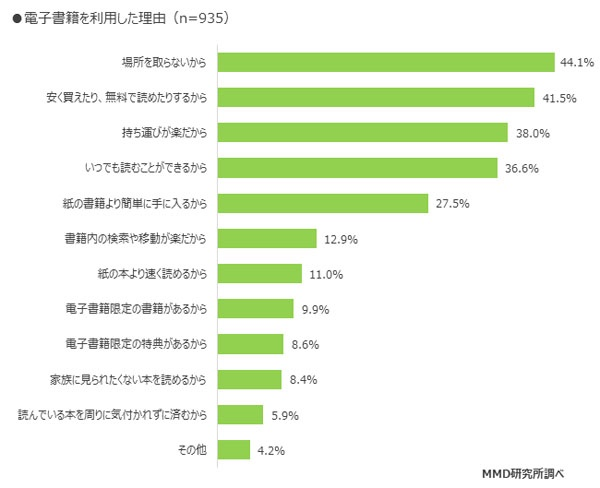
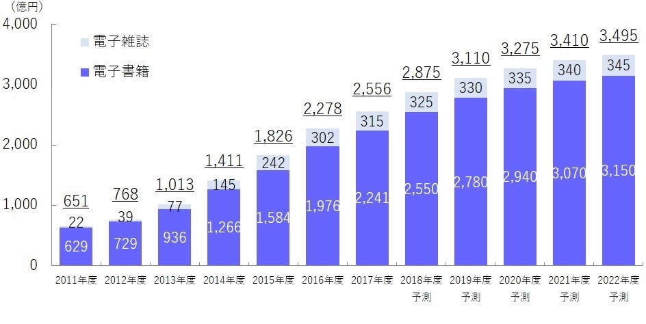
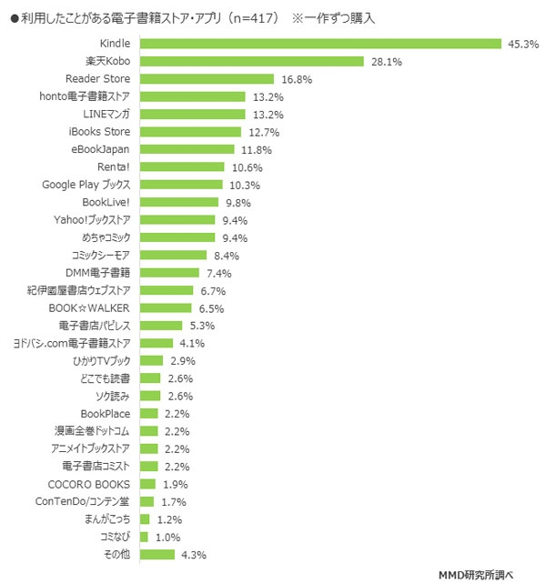
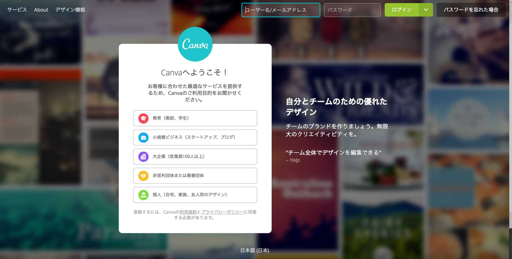
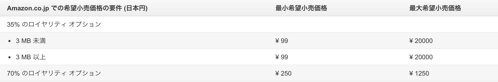

| Kindle出版で稼ぐ７つの方法: 経験・スキル・商品がなくても、５万、１０万、５０万と好きな金額を稼ぐ方法 | |
| 鈴木ケンジ | |
| zerounlimitedsyuppan (2018) | |
はじめに・・・
この度は、「Kindle出版で稼ぐ７つの方法」を手にとっていただき、誠にありがとうございます。鈴木ケンジと申します。
この本では、Kindle出版を通して自分の好きなだけ収入を継続的にしっかりと上げ続けていく方法をお伝えしていきます。僕自身、Kindle出版を通して、多くの方に手にとっていただき、それだけではなく、そういった読者の方が講座に入っていただいたりと多くの売上に繋がってまいりました。
また、実際に、Kindle出版を通して、売上を上げていく講座も運営し、参加者の多くがAmazonランキング１位を取り、ブランディングや信頼関係構築、収入へと繋がっております。
この本では、そういった有料の講座などでお話している内容を１冊の書籍にまとめ、一人でも多くの方に、Kindle出版を通し、ご自身のブランディングや信頼関係構築、収入へとつなげていくお手伝いをできればと思っております。そこで・・・
今回、「最短３時間でOK！自力でKindle出版する超速７STEP」という動画をプレゼントさせていただきたいと思います。下記のリンクをクリックしていただき、メールアドレスをご登録いただいて、申込みボタンをクリックしていただければと思います。
そうしますと、返信メールでプレゼントが届きますので、できるだけパソコンのメールアドレスをご登録いただきますと、届きやすいと思います。次のリンクをクリックしてプレゼントを手に入れてくださいね。
プレゼントのGETはこちらから→ http://m.zero-unlimited.com/l/u/Kindle7
さぁそれでは、あなたが好きなだけ収入を得られるようになるための、本題に入っていきましょう！
第１章 電子書籍の可能性
Amazonという巨人の肩に乗るチャンス
まずは、電子書籍の可能性というお話をしていきたいと思います。あなたは電子書籍を読んだことはありますか？
MMD研究所が発表した、「2018年8月 電子書籍の利用に関する調査」によると、全国の男女を対象に電子書籍の利用状況について聞いたところ、利用経験率は全体の44.7％に及ぶことがわかりました。日本人の半数の人が電子書籍を読んでいるということになります。
僕自身も、ジャンプやマガジンを今までは紙の雑誌で読んでいたのですが、奥さんにごみになると怒られ、今では電子書籍にしたり、今日のお話のメインになるKindleで、ビジネス書を読んだりしています。同じように電子書籍を読む方が増えてきているのではないかと思います。その理由とはなんなのか？次のグラフをご覧ください。
（引用 MMD研究所 「2018年8月 電子書籍の利用に関する調査」 2018/8/30 https://mmdlabo.jp/investigation/detail_1732.html）
このグラフによると、「場所を取らないから」「安く買えたり、無料で読めたりするから」「持ち運びが楽だから」「いつでも読むことができるから」「紙の書籍より簡単に手に入るから」という利便性を求めて電子書籍を読む方増えたことがわかりますね。
利便性というのは、過去を見ていくと利便性を体験したり、理解すればするほど広がっていく傾向が顕著です。例えば大昔の話で言えば冷蔵庫もそうですし、ホテルのネット予約サイト、ルンバなどなど。
同じように今後、電子書籍は確実に広がっていくことでしょう。実際に、次のグラフを見ていただくとわかると思いますが、年々市場規模は大きくなってきており、２０２２年度には３４９５億円にも達すると予測されています。２０１１年度から比べると２０１７年度で４４２％アップしています。

（インプレス総合研究所『電子書籍ビジネス調査報告書2018』2018年7月24日 https://hon.jp/news/1.0/0/12081）
このように、市場規模が大きくなっていく段階で入り込めるかどうかが、自身のビジネスを拡大していく大きなきっかけとなっていくのです。
では続いて、その中でもAmazonが運営するKindleについて見ていきましょう。その前に、そもそもKindleとはなんなのか？Amazon.が販売する電子書籍リーダーのことをKindle（ https://amzn.to/2MPB1Rt ）という場合が多いのですが、この書籍では、Kindle電子書籍のことをKindleと呼ばせていただければと思います。
電子書籍を販売しているサイトはKindle以外にも、楽天のkobo、SONYのReaderStore、大日本印刷のhonto電子書籍ストアなど大手がやっているものを始め、多く存在します。小さなところでいうと、コミック（漫画）を無料で読めるアプリなどが多いようです。その中、グラフを見ていただけるとわかりますが、Kindleが約半数である４５．３％を占めているのがわかります。
それだけ多くの人がKindleを活用し電子書籍を読んでいるということですね。ここにこそ、ビジネスが成功する秘訣があります。あなたの周りに著者の方はいますか？ほとんどいないですよね？だからこそそこにチャンスが眠っているのです。
そうは言っても、どんなチャンスがあるのかは分かりづらいと思いますので、ここで、出版するメリットをお話していきたいと思います。
出版によるメリットの１つ目はブランディングになります。これはひとり起業家から、会社まで全ての方に言えることではないでしょうか？
出版することによって、あなたは「著者」になります。著者になることで、読者との間には、「著者の先生」と「読者」という立場が出来上がります。
そのメリットは大きく、書籍を手にとっていただいた時点で、あなたは先生になり、さらに書籍の内容が良ければ、あなたのファンになっていくのです。
そして、あなたは本を出版したことで、その道の専門家として見てもらえるようになるという大きなメリットがあるのです。
ひとり起業家にとって、ブランドというのはとても大きなものです。あなたが、著者となることで、あなたが起業初心者だとしても、あなたの信頼性はアップすることでしょう。ブランドとは、安全を買っているようなものです。
例えば、ビジネスバッグといえば、TUMI、ファッションバッグといえばルイ・ヴィトンなど、それぞれの分野でブランドがあります。バッグを買うならTUMIを買っておけば、間違いない、ルイ・ヴィトンを買っておけば間違いないという感覚があるからこそ購入につながることもあります。
また、選択→決断の時短にもつながっていて、そのようなことも含めて、損をしたくないという感情がブランドを購入することにつながっていきます。
だからこそ、あなた自身がブランディング出来れば、あなたはその道の専門家となり、あなたに頼んでおけば間違いないだろうとお客様は思ってくれるのではないでしょうか。
出版するメリットの２つ目はお金をもらいながら、見込み客が自動で集まり、実績・売上につながるということ。出版した事自体が実績の一つにもなりますが、さらにメリット１でも挙げたブランディングもできることにより、売上にも繋がりやすくなります。
例えば、名刺交換の際、Amazonランキング１位の書籍の写真を載せておくだけで、受け取った方は「あっ！この人は本を出しているんだ！？しかも、１位？すごい方だ。」と思い、話を聞く態勢も今までと変わってくることは容易に想像できます。
信頼感がすでにあるため、交渉も優位に進めることができるようになりますし、あなたの商品の価値を上げてくれることでしょう。その事により、実績や売上へと繋がりやすくなっていきます。
また、僕自身がこのKindle出版でも最も言いたいこと、それは「見込み客が集まる」ということ。僕の中での見込み客の定義は「メールアドレスもしくはLINE＠の友達」となります。
紙の本でも、QRコードがあったり、検索キーワードや、URLが載っていたりして、登録するとプレゼントがもらえることがあります。しかし、かなり手間が掛かる・・・まぁ面倒なんですよね。だからなかなか登録をしてもらえない。
しかし、電子書籍であれば、URLをリンクにすることができるため、ワンクリック、ワンタップで登録フォームを出してもらえます。
そのことがとても大事なわけです。例えばフォームでも名前、ふりがな、メールアドレス、住所など項目が増えれば増える程、登録率が下がります。
同じように、登録までのプロセスが大変であればあるほど登録率が下がります。だからこそ、紙の書籍では難しいメールアドレスの登録も電子書籍では、とてもしやすく登録率も上がるのです。
また、その際も名前とメールアドレスと２つの項目を設けるのではなく、メールアドレスのみ、LINE＠の友達追加のみと一つに絞ることをおすすめします。
ひとり起業家にとって、見込み客を集め続けるということはとても大事なことです。僕自身も１件のメールアドレスに１５００円から２０００円という金額を広告に投資してまでも、見込み客を集めています。業界によっては、５０００円１００００円という金額を投資している方もいらっしゃいます。
見込み客はそれだけ大事なものであり、それがこのKindle出版では、印税というお金をいただきながら見込み客を集めることが出来、さらにはその見込み客に対して、しっかり接触をしていき、信頼関係構築が出来れば、あなたの本命商品も買ってくださることでしょう。
そして、最後のメリットとして、無料で簡単に誰でも自由に、出版できるということ。このことを知らない方がとても多いのですが、実はKindle書籍は誰でも簡単にしかも無料で出版することができるのです。
通常、紙の書籍であれば、「自費出版」と言って数十万円から数百万円のお金を支払い、本を出版していく方法と、出版社に持ち込んだり、依頼されて出版する「商業出版」という２つの出版方法があります。
とは言っても自費出版で言えば大きな費用がかかったり、商業出版でも、企画が通るまで時間も掛かり、出版するまでに１年間かかることもざらにあります。さらに、出版できたとしても本屋で売れるかもわからなく、売れなければどんどん返品を掛けられ、倉庫にあなたの本の在庫が眠る・・・なんていう悲しい結末になることも多くあります。
それは、新刊が約 ２００冊出ていて、１ヶ月にすると約 ６，０００冊、年間にすると約７万冊もの新刊が出ているのです。そうなると、書店もすべての本を書棚に置くこともできず、ダンボールに入れたままで、返品になるということも・・・。
もちろん紙の本の出版も大きなメリットも多くありますが、そういった悲しい現実もあるのです。
その点、電子書籍は、無料で出版できるし、自分で簡単にできるし、誰でも出版することが出来ます。実際に、僕の生徒には２時間で出版、３時間で出版、１日、２日出出版したという方も多くいらっしゃいます。
しかも、有名な人か？と言われると正直そうではなく、副業の方や主婦の方、顔出しも出来ない方などの方も多いのですが、出版し、Amazonランキングで１位を取っています。
それができるのも、Amazonという巨人の肩に乗ることができるからなのです。Amazonユーザーは４０７９万人という調査結果が出ています。Facebookで２８００万人、流行っていると言われているInstagramでも２０００万人。
Amazonはそれ以上であり、それだけ多くのユーザーがいる市場にあなたの本を出すことができるのです。しかも無料で。さらに言えば、AmazonはSNSのように、調べるためや、なにか投稿するというウェブサイトではなく、買うためのサイト。
お客様は、Amazonを開くときは買う目的を持っているのです。その中で、あなたのことを知らない人が、電子書籍を手に取り、あなたのファンになり、あなたの商品を買ってくれることを、想像してみてください。
想像するだけで、ワクワクするのではないでしょうか？あなたにもそんな流れをぜひ作っていっていただきたいと思います。
次の章では、あなた実際に自分で無料で出版する方法を簡単にお伝えしていきたいと思います。
第２章 Kindleを自分で出版する方法
それでは、まず自分で簡単にしかも無料で出版する方法をお伝えしていきます。はじめにでお渡ししたプレゼント「最短３時間でOK！自力でKindle出版する超速７STEP」をまずはダウンロードしてください。そちらでも動画で解説しています。
→ http://m.zero-unlimited.com/l/u/Kindle7
この動画でも言っておりますが、とてもシンプルに出版することが可能です。用意するものは、ライブドアブログアカウント、KDPアカウント（KindleDirectPublishing）、表紙、原稿のみです。
それが用意できれば、あとはライブドアブログで原稿を書いていき、KDPに書籍を登録することで２４時間以内に出版することが出来ます。では簡単な７STEPを見ていきましょう！
自力でKindle出版する超速７STEP
まずは、Amazonで出版するために、Amazonアカウントを取得する必要があります。もうすでにお持ちであればこのSTEPは飛ばして構いません。
Amazonアカウントを取得する→ https://amzn.to/2Q7gnKA
続いて、KindleDirectPublishing、KDPのアカウントを取得します。KDPのアカウントがなければ出版は出来ませんので必ず取得してください。そして、埋めていく箇所がありますので、それを全て埋めていって完了です。
KDPのアカウントを取得する→ https://kdp.amazon.co.jp/ja_JP/
では、続いて、ライブドアブログのアカウントを取得します。これがなぜ必要かというと、自分で出版する際に、ライブドアブログを活用すると簡単にできるためです。だから、アメブロをやっているんですが、移す必要がありますか？というような質問もあるかも知れませんが、あくまでもKindle出版する際に必要なだけで、ライブドアブログで集客するとかではありませんので、気にせずまずはライブドアブログのアカウントを取得してください。
ライブドアブログのアカウントを取得する→ http://blog.livedoor.com/
さて、ついに書籍の内容を書いていきます。１章、１節、１項ごとに記事として投稿をしていってください。出来れば、章や節ごとに「１−１，１−２」と数字を振っていくとよりわかりやすくなります。
そうすることで、次のE-PUB形式でファイルをダウンロードする際に、自動で目次が出来上がります。また、書く際は、カテゴリーで書籍名を作り、そこにまとめて書いていくとダウンロードするときにしやすくなりますので、おすすめします。
また、新しい書籍を書くときは、カテゴリーを新しく作り、そこに同じように書いていくことで、新しい書籍のダウンロードも容易になります。
出版まであと１歩！原稿が書き上がったらE−PUB形式でファイルをダウンロードしましょう！
メニューの「ブログ設定」をクリック→「EPUB書き出し」をクリック→「本のタイトル」、「著者名」、「書籍のレイアウト」を選び、「本を書いたカテゴリー」、「期間」、「書き出す記事の状態」、「オプション」を選択→「内容を確認」をクリック→良ければ「ファイルを書き出す」をクリックで、E-PUB形式でファイルをダウンロードすることが出来ます。
※表紙をアップロードする箇所がありますが、KDPに登録する際に表紙をアップロードするので、ここではアップロードしてもしなくても大丈夫です。
続いて、表紙を作ります。デザインできる方はご自身でデザインしていただければ良いですし、もし出来ないのであれば「クラウドワークス」や「ランサーズ」といったプロに簡単に依頼できるサイトがありますのでそちらで頼むことも良いでしょう。大体５０００円から１万円ほどで作成していただくことが可能です。
もっと安く抑えたい方は、ココナラというサービスを使うと、作ってくれる方を見つけることができるかも知れませんので、試してみてください。
また、それ以外にも簡単なウェブツールを使って表紙を作ることも可能です。一つを例に上げると、「Canva」というツールがあります。こちらを使うと、表紙のサイズが最初から用意されていて、その中に、自分の好きな写真や文字等を簡単に入れることが出来るので、おすすめです。
ちなみに表紙のサイズは次に記載します。
【ファイル形式】
JPEG (JPEG/JPG)
TIFF (TIF/TIFF)
一般的にはJPG形式になると思います。
【寸法】
理想の縦横比 ＝ 1.6 : 1
Kindleの推奨は縦2560px：横1600px
※縦1000px：横625px以上が必須
また、簡単に表紙を作るツールや、先程挙げた外注先を探せるサイトのURLを最後の特典に記載してありますので参考にしてください。
そして、ついに出版です。KDPで先程ダウンロードした、E-PUBファイルや表紙をアップロードし、カテゴリーを選んだりと順番に登録をすると、だいたい２４時間以内に出版となります。長くても２日間あれば出版できますので、安心してください。
さてこれで晴れて出版となったわけですが、次の章では実際にKindle出版によってどうやって収入を得ていくのか７つの方法をお話していきます。
KDPに登録する際、Kindleセレクトにも合わせて登録してください。こちらに登録をしないと、次の章の印税で稼ぐという部分に詳しく書きますが、７０％の印税を選べなかったりとマイナスになる部分がありますので、登録をしておいてください。
Kindleセレクトへの登録や詳細などは、次のKDPヘルプを御覧ください。
→ https://kdp.amazon.co.jp/ja_JP/help/topic/G200798990
本をさらっと短時間で書き上げる書き方
本を出版する上で、大きな障害となるのが書く時間がない、何を書いてよいかわからないということだと思います。出し方は先述しましたが、内容が書けなければ本を出版することはできないですよね？ということで、ここでは、本をさらっと短時間で書き上げる方法をお伝えしていきます。
その方法は次の９STEPになります。
本をさらっと短時間で書き上げる簡単９STEP
これはもちろん当たり前ではありますが、まずは書く内容を決めていきましょう。ただ、そこで勘違いをしていただきたくないのですが、完璧を求めないでください。なんとなく、こんなことを書こう、こんなことを書きたいなというレベルで大丈夫です。
いろいろ考えているうちにどんどん変わっていくこともあるので、今回の僕の本で言えば一番最初に考えた内容は、Kindle出版のことを書こうぐらいしか考えていません。そこから次のSTEPに進み、書く内容をポンポン挙げていたら、最終的にこの本になりました。
なので、最初から１００％を求める、考えるのではなく、なんとなく３０％ぐらいの感覚でこんなこと書きたいなぐらいで大丈夫です。
こちらも、内容と同じで、完璧に決める必要はありません。ある程度、このようなことを書いていこうという、内容よりももう少し突っ込んだところがタイトルになります。ただ、内容同様、中身を考えているうちに全く変わってくることがほとんどですので、同じく３０％ぐらいの感覚で大丈夫です。
このタイトルも指標として、仮で決めるだけのものですので、ここで時間を掛けるのを止めましょう。
続いて、なんとなく書こうと思った内容、タイトルに沿って、自分自身が持っているコンテンツを箇条書きで結構ですので、付箋に書いていってください。
この付箋に書くというのがポイントなのですが、ノートでもよいのですが、間違えたら消したりが時間の無駄になります。また、併せて、次の工程のときに、付箋でしたら、貼って剥がしてを繰り返すだけで出来るので、付箋に書いていきます。
必要なければ捨てればいいだけなので問題ありませんからね。そのため、ここでは細かく内容を書くのではなく、箇条書きや、キーワードだけで大丈夫です。例えばこの本で言えば、
・出版プロデューサー
・自分で出版する方法
・出版で稼ぐ方法
・出版代行
・見込み客集め
・出版代行業者や出版社はオススメしない
・印税
などとなります。ご自身のコンテンツなので、キーワードでも十分内容がわかると思いますしね。そしてもう一つ大事なポイント、アイデア出しと修正は別物と考えてください。この付箋に書いていくという作業のときは、アイデア出しです。一度出して、これはいらないか、などと考える必要はありません。そういった修正は次以降の工程でやっていきます。
ここでまずやることはアイデア出しなので、とにかく一つでも多く書く内容のアイデアを出していくことになりますので、気にせずバンバン書き出していってください。
ここから、だんだん本らしくなってきます。このSTEPでは、章の書く順番を決める作業になります。先程書いた付箋を同じようなことを目的として言っている内容同士でグループを作ります。先程の僕の本を例に出すと、
・出版プロデューサー
・自分で出版する方法
・出版で稼ぐ方法
・出版代行
・見込み客集め
・出版代行業者や出版社はオススメしない
・印税
これをグループ分けすると、
・出版プロデューサー
・出版で稼ぐ方法
・出版代行
・印税
は、一つのグループになります。そして、次はその中での順番を考えます。同じように例を出すと、
・出版で稼ぐ方法
・印税
・出版代行
・出版プロデューサー
と僕はしました。この順番の意図は、出版で稼ぐ方法というのは大きな枠で、それ以外が稼ぐ内容になるから、まずは概要を書こうと出版で稼ぐ方法が最初に来て、そこからは、想像つきやすい印税を最初に持ってきたという形です。
もちろん、これもあとから順番は変えられるので１００％で決めなくても大丈夫です。
続いて、そのまとめたグループにタイトルを付けます。これが目次の仮タイトルになります。先程の例を出せば、大きな枠になっていた、出版で稼ぐ方法というのが仮タイトルになります。ここもあくまでも仮のタイトルですので１００％を目指さないでください。
続いて、グループを作り、仮タイトルを付けたら、そのグループを順番に並べます。どの順番で書くかということを決める作業になります。ここは１００％までいかなくても８０％ぐらいは決める必要があります。
書く順番によって、書く内容も変わってくると思いますので、完璧とまではいかずともある程度、この順番で書くというのを決めておいたほうが、後々楽になります。
そして、本番ですね。内容を先程挙げたキーワードや仮決めしたグループのタイトル、順番に沿って書いていきます。書いている途中で、順番が変わったりすることもありますが、そこは気にせず、書いていってください。このときのポイントとしては、先程のアイデア出しのときと同じで、書く作業と、修正する作業は頭の使い方が違います。
まずは書いていくことを優先し、書き上がったら、内容をもう一度見直し修正をしていってください。
そして、もう一つ大事なこととして、「順番に書く必要はない」ということ。
本となるとブログなどと比べても格段に文字数も多くなります。実際にこの本も、３００００文字以上あります。そう考えると、最初は結構億劫になる方もいると思うんですよ。けど、自分が書きやすい項目から書いていくことで、だんだん気分も乗ってきて書きやすくなります。
しかし、これが順番で書かないとと決めてしまっていると、途中で悩んでしまったり、考えてしまって止まってしまうと、先になかなか進みません。項目の途中でも違う項目に移っても構わないので、まずは書きやすい項目からどんどん書いていきましょう。
また、タイピングが遅いとどうしても時間がかかってしまいます。タイピングの練習ソフトが無料でたくさんありますので、お時間あるときにぜひとも練習してみてください。
最後の付録の章にもタイピングの練習ソフトのリンクを貼っておきますね。
続いて、最終段階に入っていきます。目次の本決めになります。目次の仮タイトルを決めてありますが、それをさらにブラッシュアップさせます。
例えば、この項目のタイトルも最初は、
「本を書き上げる簡単９STEP」
でした。
これをさらに読みたくなるように、数字を使ったり、時間の概念を付け加えて、
「本をさらっと短時間で書き上げる簡単９STEP」
となりました。ちなみに、このSTEPも元々、７STEPだったのですが、書いているうちに、もう少し細かく付け加えようと思い、９STEPと２つのSTEPが加わった形です。
このように、最初に決めたものが１００％そのままというのは殆どありませんので、仮で決めるということ、そして１００％を目指すよりもスピードを意識してみてください。
そして、最後。電子書籍のタイトルの本決めになります。このタイトルで売れ行きも変わってくるので、ここには、時間を割いてもらえたらと思います。
第４章 Kindle書籍の販促のAmazon書籍を売る１３の方法というところで、どうやってタイトルを決めればよいか書いてありますので、参考にしてください。
ここまで出来れば、表紙の依頼をして、KDPに登録して出版するだけです。もうワクワクしかしませんね。ただ、そうは言っても記念に出版するだけではもったいないですので、出版によって、しっかり稼いでいく方法を次の章でお伝えしていきます。
また、第４章では、Kindle書籍の販促方法についても書いていますので、併せて御覧くださいね。
第３章 Kindle出版で稼ぐ7つの方法
さぁそれでは、実際にKindle出版をして、どうやって稼いでいくのか、順番にお話していきたいと思います。その７つの方法とは、
印税・コミュニティー・無形商品・有形商品・アフィリエイト・出版代行・出版プロデュース
という７つになります。一つ一つ解説していきますので、ご自身が合う形を選んでいただき、ビジネスへとつなげていっていただければと思います。
その１ 印税
まずは、「印税」。本といえばやっぱり夢は印税で収益を得るということですよね。しかもKindle電子書籍は、最大のロイヤリティが７０％という紙の本では考えられない利率になっています。印刷や流通などがないからこそ出来る利率ですね。ちなみに、Kindleでは、３５％と７０％を選ぶことが出来ます。そこにはルールが有り、そのルールによって前述のロイヤリティを選べるかが変わってきます。そのルールは次の通り。
このように、３５％のロイヤリティの場合は、最小希望小売価格は、９９円となり、７０％の場合は、２５０円となります。これは色々なとり方がありますが、もし印税で稼ごうとした場合は、７０％を選ぶほうが良いでしょう。また、価格もある程度高めの金額にしていくことをオススメします。
その代りと言ってはなんですが、ページ数も増やしていかなければ、お客様は満足しません。１５００円で販売されているのに、１０ページ２０ページではお客様は怒り出してしまうかも知れませんね。その分、執筆にも時間がかかることになりますので、そこは最初から頭に入れておくことをオススメします。
また、Kindleの場合、通常の販売とは別に、「Kindle Unlimited」という読み放題のサービスが有るのですが、そちらも印税の対象になります。
こちらは、販売数ではなく、読まれたページ数により支払いが行われます。読者は本を何回でも読むことができますが、初めて読んだページ数のみが支払いの対象になります。読者が本を読むには数か月かかることもありますが、かかった期間には関係なく、支払いが発生します。
ただ、Kindle Unlimitedでの印税、そして、７０％の印税を得るには、KDP セレクトに登録する必要があります。KDPのヘルプによると
任意登録の KDP セレクト プログラムに電子書籍を追加すると、より多くの読者に自分の本を知ってもらい、多くの収益を受け取る機会が得られます。KDP セレクトには本を 1 点から登録でき、複数の作品や、作品すべてを登録することも可能です。KDP セレクトに本を登録すると、日本、ブラジル、インド、およびメキシコの読者への販売に対して、70% のロイヤリティを受け取る権利が得られます。
電子書籍を Kindle ストアの独占販売にすると (これは KDP セレクト登録期間中の必須要件です)、その本は Kindle Unlimited (KU) および Kindle オーナー ライブラリー (KOL) にも追加されます。出版者は、KU または KOL の利用者がその本を読んだページ数に基づいて、KDP セレクト グローバル基金の分配金を受け取ることができます。
とあります。そのため、例えば楽天やiBOOKSなどに登録する場合は、KDPセレクトに登録ができないため、Kindle Unlimitedからの以前に受け取りや、７０％の印税を選ぶことができなくなりますので、お気をつけください。
ただ、正直にお話しますと、ネット上でバズる（※短期間で爆発的に話題が広がり、多くの人の耳目や注目を集め、巷を席巻すること）ことがなければ、なかなか印税だけで稼ぐことは難しいと思います。
海外では、何十万円、何百万円と印税で稼いでいる方もいらっしゃいますが、現実的に考えて、それは先にも述べましたが、とても難しいことです。
電子書籍専門の出版社や、教えている方の中には印税で何百万稼ぐことが可能です！とおっしゃる方をたまに見ますが、そう簡単なことではありませんので、僕自身はあまりこの稼ぎ方に注目することはオススメしません。
ただ、確かに僕自身、今も毎月印税が入ってきて、その印税をAmazonのポイントに交換しAmazonの買い物に使ってはいますが、そこも目的にしてしまうより、もっと先に目を向けて違った形で収入を得ていくことのほうが、より簡単ですし、より大きな収入を得ることが出来ます。次の稼ぎ方からは、この印税以外の稼ぎ方に目を向けてお話していきますので、ぜひ読み進めてみてください。
また、印税で稼ぐためには、販促の方法も必要になってきます。次の章で詳しくお話していきます。
【印税で稼ぐメリット】
最大７０％という印税のため、出版することだけで稼ぐことが出来る。
【印税で稼ぐデメリット】
バズらないと、実質難しい。ページ数が必要となり、出版までに時間が掛かってしまう。
※Kindle オーナー ライブラリー KDPヘルプより抜粋
Kindle を所有する Amazon プライム会員は、Kindle オーナー ライブラリー (KOL) の数千冊の本から 1 か月に 1 回、無料で本を読むことができます。現在、KOL は Amazon.com、Amazon.co.uk、Amazon.de、Amazon.fr、および Amazon.co.jp でのみ利用可能です。KOL は、読者が Amazon.com の Kindle ストアで電子書籍を購入した後、その電子書籍を友人や家族に貸し出すことのできる本の貸し出し (Kindle 本のレンタル) 機能とは異なります。
KOL の対象となる本には Amazon プライムのバッジが表示されるので、Kindle 端末や Amazon.com で本を検索および参照するときに一目でわかります。
読者は KOL 本を何回でも読むことができますが、借りられる本は 1 か月に 1 冊のみです。ただし、1 冊の本を好きなだけ長く借りておくことができます。出版者が KDP セレクトへの登録を更新しない場合も、読者はその本を返却しない限り、借り続けることができます。
読者がお客様の本のページを初めて読むたびに、ロイヤリティの支払い対象になります。同じ読者がお客様の本のページを再読した場合は、ロイヤリティの対象にはなりません。KOL のロイヤリティの詳細については、次のヘルプ ページをご覧ください。
その２ コミュニティー
さて、印税に続いてお話していきたいこととしては、コミュニティーという稼ぎ方。こちらは２通りあるのですが、順にお話していきますね。まずそもそもKindleにより、あなたは著者となり、読者の方とは、「著者」と「読者」という関係が成り立つというお話を第１章でお話させていただきました。そのことにより、読者の方は先生に会いたいと、なる方も多く、ファンを獲得することが出来ます。
であれば、そうして出来たファンの受け皿を作って上げる必要がありますよね？そこで登場するのが「コミュニティー」になるのです。コミュニティーという言葉を定義すると、色々な意味はありますが、ここでは、「ネットワーク上における情報交換を目的とした団体、または情報交換を目的としたネットワークそのもののこと。」と定義していきます。いわゆる仲間同士のつながりの場ということですね。
では実際に、どうやってコミュニティーで収益を上げていくのかということをお話していきたいと思います。先述したとおり、コミュニティーで収益を上げていく方法は２つあります。一つは無料、そしてもう一つは有料。
まず無料のコミュニティーで収益を上げていく方法をお話していきます。無料でどうやって稼ぐの？という疑問もあると思いますが、ここで言う無料というものは、最初の段階というイメージになります。僕がよく講座受講生やコンサルティングでお話するシンプルなビジネスモデルとして、「FFMB」というものがあります。
F：FREE
F：FRONT END
M：MIDDLE END
B：BACK END
の頭文字を取ったもので、この流れでお客様に提供していきましょうと、提唱しています。「FREE」は文字通り無料のもの。例えばPDFのレポートであったり、動画、無料セミナーなどなど無料で価値を提供し、見込み客を集めるときに使うものです。
続いてフロントエンド。これはいわゆる集客商品と言われるものです。無料のものもフロントエンドと定義する場合もありますが、ここでは、有料で定額のもの、例えば３０００円ぐらいのセミナーや書籍、体験、診断、相談などなど、お客様にあなたの商品を知ってもらう、価値を感じてもらう、あなたという人に直接触れてもらう、お客様に悩みに気づいていただき、解決方法を提供できる場として使うものになります。
フロントエンドはそこで収益をもとめるというより次のミドルエンド、バックエンドで、収益を上げるために赤字でも問題ないものとして考えると良いと思います。
ミドルエンドは更に金額を上げたもの、例えば３万円のセッション、１０万円の３ヶ月コンサル、合宿など、フロントエンドの次に購入していただく、高額とまでは行かないが、ある程度金額をいただけるもの。
そして、バックエンド。これは本命商品、収益商品とも呼ばれるもので、最終的に本当に売りたい商品になります。フリーもフロントエンドも、ミドルエンドも全てこのバックエンドを販売するために存在しています。
コミュニティーはここで言うFREE、無料でまずは提供してみようということです。出来ればリアルで会う場を作れるようにすると、より関係が強固になると思いますので、オススメします。
ただ、普段は会員サイトを用意してもよいし、Facebookグループを活用しても構いませんので、やり取り出来る場所を用意してください。そしてそこで、勉強会をやってもよいし、ランチ会、ワークショップなどなどフロントエンドの商品へとつなげて、売上を上げていっていただければと思います。
続いて、有料で稼ぐ方法は、オンラインサロンを活用するということ。これはご自身でオンラインサロン（会員制グループ）みたいなものを作ってもよいし、DMMさんが作っているオンラインサロンを活用しても良いです。
※DMMオンラインサロン→ https://lounge.dmm.com/
毎月課金制のもので、月１０００円、５０００円、１００００円と、あなたの好きな金額で課金していくことが出来ます。ただ、書籍から直接有料のオンラインサロンにつなげてもよいのですが、一度メルマガやLINE＠などを入れてからのほうが、より関係性が作れるのでオススメします。
ただ、デメリットを挙げると、続けることの難しさです。多くの方が会員制のコミュニティーなどを立ち上げてはいますが、長い期間うまく運営されている方はとても少ないのが現状です。最初１００人でスタートできたとしても、退会してしまう方も多く、常に集客する必要があることもあります。その理由もコンテンツが悪いという理由だけではなく、いろいろあります。
実際に、コミュニティーの中身、例えば学べる内容などがとても良くても、食傷気味になってしまって、自分の中でそのコミュニティー全ての価値を消化できないという理由で退会する方も多く、僕自身の考え方としては、有料のコミュニティーではなく、無料のコミュニティーで価値を提供していき、キャッシュポイントは別に持ってくることをオススメします。
【コミュニティーのメリット】
無料・有料のパターンが有り、誰でも出来るツールを活用でき、簡単に始めることが出来る。ファンの受け皿を用意することが出来る。
【コミュニティーのデメリット】
長期の運営が難しい。キャッシュポイントへのつなげ方が難しい。
その３ アフィリエイト
続いて、アフィリエイト。これは自分の商品ではなく、広告主の商品やサービスを紹介することで、読者が商品を購入するなどの成果があがった場合に報酬（広告収入）を受け取ることができる仕組みです。このアフィリエイトであれば、もしあなたが商品を持っていなくても販売することが可能になります。
ただ、もちろん、本の内容に全く関係ないもの、この本で言えばAmazon Kindleの話をしているのに、いきなり次のようなホームプロジェクター（ https://amzn.to/2NhT6Ha ）のアフィリエイトをしても売れないですよね？
なので、本の内容に合わせたもの、この本で言えばKindleのタブレット（ https://amzn.to/2MPB1Rt ）のようなものを紹介していくことで、書籍を読むうちに興味を持って頂いた方が購入していただければ、あなたに報酬が入るようになります。
もちろん、それをいかに購入していただけるか、考えて書いていくことも必要になります。そして二人に一人が購入していただければ、本が売れれば売れるほどあなた自身の収益も上がっていきます。
実際に、僕の出版した電子書籍ではアフィリエイトも載せていましたが、そこから売上が上がっています。
趣味関連の本を出す場合は、このアフィリエイトがかなり活用できるのではないかと思います。例えば、釣り好きの人が本を出版するのであればオススメの釣り竿やルアーなどをアフィリエイトで紹介していくといった形ですね。
また、アフィリエイトでいうと、あなた自身の本を紹介するときに、全てアフィリエイトリンクで紹介をするということもオススメします。実際に、僕も自分の本を紹介するときは、全てアフィリエイトリンクになっていて、そこから多少ですが売上が上がっています。
もともと、安く販売しているということもあり、大きな売上とはなりませんが、やっておいて損はないと思いますので、まずは、Amazonのアソシエイト・プログラムに参加してみてください。
Amazonアソシエイト・プログラム→ https://affiliate.amazon.co.jp/
ただ、実際にアフィリエイトだけで販売していくとなると、価格の低い本からある程度、高単価な商品の購入というお客様に行動をとってもらうことが難しいです。しかもあなたの商品ではないからこそ、その商品に対して多くの価値を見せることが出来なければ難しく、コピーライティングのスキルも必要となってくるでしょう。
【アフィリエイトのメリット】
商品がなくても販売することが出来る。
【アフィリエイトのデメリット】
販売するのにコピーライティングのスキルが必要になってくる。
その４ 有形商品
続いて有形商品。商品には無形と有形がありますが、まずは有形商品。例えばエステをやっている方で言えば美容液やマッサージオイルなど、美容師さんであればシャンプーなど。形のあるもの、手で触れるものを販売していくという形をとるということです。
そのため、もし有形商品を持っていて、それを販売できる流れができた場合は、収入の柱を別に持つことができ、さらにはそこから本命商品も売れていく可能性があります。
ただ、これは商品を持っている前提となるので、すべての人ができるかというと、それは難しいと言わざるを得ない稼ぐ形となります。ただ、商品がなくてもその３でお話したアフィリエイトを活用することで、収入を得ていくことは出来ますので、ご自身の現状を理解した上で収益へとつなげてみてください。
そして、有形の商品がない場合は次の無形商品を販売していくことをオススメさせていただきます。
【有形商品のメリット】
Kindle書籍での収入の柱ができ、本命商品までの流れを作ることが出来る。
【有形商品のデメリット】
商品を持っていなければ販売できない。また、アフィリエイト同様、コピーライティングのスキルが必要。
その５ 無形商品
続いて、無形商品で収益を上げていく方法。これは形のないもの、「情報」や「知識」、それらに関連するスキルのことを言います。僕のようなコンサルタントやコーチ、カウンセラー、弁護士などの士業などの持っている「情報」や「知識」そして「スキル」を販売していくことで、収益を上げていくことです。
僕自身はまさにKindleで出版した本から、メールアドレスを登録していただき、その後、メルマガから５万円のオンライン講座をご購入いただいたり、最終的に１００万円ほどの高額の講座にご参加いただいたりしていて、この無形商品で収益を上げています。
他にも、僕がKindle出版を教えた方にプロデュースして出版された、「Hさん」という男性の方も、Kindle書籍からメールアドレスを登録していただき、最終的に同じく１００万円ほどの講座に入っていただいています。
また、自分で元々持っていた商品ではないのですが、Kindle出版をしたことで、その方法を教えてほしいと、有料で教えて稼いだ「Nさん」や、「Iさん」。他にも自分の講座受講生をプロデュースして、Kindle出版につなげた「Iさん」などなど、Kindle出版から自身の講座などにつなげた方や、Kindle出版をしたことで新しい収入の柱になった方もいます。
※Kindle出版プロデュースのことは稼ぎ方の７つ目で詳しくお話しています。
ただ、その場合は、いきなり書籍で販売というより、無料のプレゼントなどのFREE商品によりメルマガやLINE＠に登録していただき、そこから普段のメルマガなどで、しっかりと信頼関係を構築し、初めて販売という形をとることをオススメします。
【無形商品のメリット】
いきなり、販売ではないので、更に信頼関係構築が出来、高額な商品でも購入につながる。
【無形商品のデメリット】
メルマガなどをやっていない場合は、売ることが難しくなる。
その６ 出版代行
続いて、出版代行。あなた自身もうすでに出版をしています。ということは、誰か他の方の本も同じように出版してあげることが出来ますよね？そのことを例えばFacebookで投稿したり、リアルで会った方にお話することで、出版依頼を受ける事も出来ます。また出版代行も２つの形があります。一つはフルで代行を請ける、もう一つはティーチングする形。
フルで代行を請ける場合は、出したいという方がいたら、ヒアリングして代筆までしてあげ、出版まで全てをあなたが受け持つ形。ティーチングの場合は、書いてもらうのはお客様に書いてもらい、KDPも登録してもらい、わからないところを教えてあげるという形。
お金を多くいただけるのはフルで代行する形になります。もちろん、２つを合わせて、原稿はお客様に書いてもらい、それ以外はあなたが代行するという面倒くさいところだけ、お客様に任す(笑)という形をとることも出来ますので、あなた自身がやりたい形で、代行を請け負っていただければと思います。
また、無形商品のところで挙げた「Nさん」は出版代行で、「Iさん」は、ティーチングで収益を挙げることが出来ました。
【出版代行のメリット】
商品自体はなくても出版の方法さえわかれば商品として販売できる。
【出版代行のデメリット】
お客様と蜜に連絡を取る必要がある。完全に代行の場合は、お客様が納得する形まで仕上げなければいけないので、そこのすり合わせが必要である。
その７ 出版プロデュース
そして、最後に出版プロデュース。これは出版代行とは違い、全てをプロデュースする形のことを言います。そのため、金額もしっかりといただくことが出来るので、オススメしています。
例えば、本のタイトル、目次、内容、売り方、見込み客の集め方まで全てを包括的に教える立場、ある意味コンサルティングをしていくことで、お客様がKindle出版をしたときに、最大限の効果を出せるお手伝いをしていくお仕事です。
また、さらに言えば本を出版するまでではなく、その後のビジネスモデルまで一緒に設計することが出来れば、３０万５０万１００万という収益を上げていくことが出来るようになるでしょう。
僕はKindle出版では、印税で稼ぐのではなく、あくまでも本を読んで関係性が出来た見込み客を集めていくことを目的としています。その流れをあなた自身も作ることが出来、それをお客様にも提供できるようになれば、お客様からは感謝され、あなた自身もしっかりと収益も上がり、お互いがWin-Winになっていく関係を作っていくことが出来ます。
また、出版は一度でおわるというより、何冊も続けて出したいと思う方が多いです。また、言ってしまえば１冊を出すより何冊も出すほうがより効果的に集客をすることが可能になるので、出版プロデュースをしたあとも、またお客様にリピートをしていただくことも、他のビジネスに比べ、可能性も高くそういった点でもこの出版プロデュースはおすすめしています。
ただ、もちろんこれをやるには、ある程度マーケティングの知識やライティングの知識も必要となってきます。また、Kindle出版上でのマーケティングも知らなくては、お客様に満足できる結果を残すことは難しいかも知れません。しかし、その上でもこの出版プロデュースはとてもオススメなのは間違いありませんので、ぜひとも選択肢の一つとして頭に残しておいていただけたらと思います。
さらにいうと、この出版プロデュースを求めている方は、とても多くいらっしゃいます。実際に、僕自身出版プロデュースを依頼されることも多々あるのですが、正直その時間をとることが出来ず、僕の受講生に話を持っていったりしています。
また、稼いでいる起業家であればあるほど、Kindle出版する時間を作ることが出来ません。しかし、Kindle出版の良さはある程度理解しています。だからこそ、そういった方たちの本を、もしあなたがプロデュースすることが出来たのであれば、あなたは一気にブランディング出来ることでしょう。
ということで、Amazonと著名人２つの巨人の肩に乗る方法をお話していきたいと思います。稼いでいる起業家であればあるほど、Kindle出版したいけど、する時間を作ることが出来ないというお話をしました。
これは、本当にそうで、いろいろな方に話を聞いたところ、
・出版したいけど、出版社や、代行業者を探すことも面倒
・マーケティングがわかっていない人にお願いをしたくない
・自分のことを知らない人にお願いすると、やりとりが手間がかかりそう
というご意見をいただきました。まさにそうだと思うんです。僕自身はこういった新しいことをやっていくのが好きで、書くことも苦痛ではないので苦にならないのですが、中には苦手な方も多く、自分でやることはもちろん、誰かにお願いするのも面倒であったり、不安がありできないという方がいらっしゃいます。
そこで、もしあなたが、自分で出版をしていて、さらにはマーケティングもわかっていて、そういった著名人の方が知り合いにいるのであれば・・・大きなチャンスです。
その方に声を掛けて、プロデュースすることが出来れば、あなたの実績の一つとして、その方のお名前を使うことが出来ます。さらには、もしかしたら紹介をしてくれるかもしれません。そして、著名人であればあるほど、本を出版したときに販売数が増えます。
ということは・・・、あなたの実績として大きなものを載せることが出来るのです。なので、著名人に声を掛けるときに、注目する点として
・メルマガやLINE＠などの読者が多いか？
・Facebook、ブログなどメディアの影響力は強いか？
という２点を見てほしいと思います。この２点のうち、どちらかがあれば、その方にお声掛けしてみると良いでしょう。そして、契約する際には、必ずあなたの実績として使わせていただく旨を伝えてくださいね。
それだけで、一気にKindle出版プロデューサーとして、売れっ子になること間違いないでしょう。また、お客様の声をいただくときは、必ずビフォー・アフターを数字で表せられるように注意してください。「良かった！」だけでは、弱いですので、ビフォー・アフター、そしてさらに、数字、例えば売上、メルマガ読者など数字で表すことが出来るものがあれば、必ず数字として頂いてください。
稼いでいる方は、そのあたりもわかっていますので、あまり気にせずお願いしちゃって大丈夫だと思いますしね。
まだ誰も気づいていないこのチャンスをぜひとも掴んでほしいと心から思います。
・Kindle出版して、自分のブランド、信頼、権威を最短１週間で一気に獲得！
・無名でもKindle出版して、Amazonランキング１位を獲得することで実績をGET
・プロフィールや名刺に著書の画像（書影）を掲載で信頼度がUP
・無料で"見込み客リスト"がAmazonから集められるメリットを説明することで、高単価のKindle出版契約をGET
・Kindle出版をきっかけに、集客コンサルやマーケティングの月額顧問契約を提案
・Kindle出版したクライアントに、２冊め、３冊めの提案をして、さらに売上UP!
・自分の商品を持っていなくても、Kindle出版ノウハウさえあれば、出版プロデューサーとして活動できちゃう
・出版プロデュースに特化すれば、顔は出さずに副業でもビジネスできる
・空いた時間、スキマ時間を利用で、お仕事できる
このような方は、ぜひKindle出版プロデューサーとして活躍していただきたいと思います。
【出版プロデュースのメリット】
商品がなくても可能。自分の商品のフロントエンド商品としても可能。リピートを取りやすい。実績を作りやすい。
【出版プロデュースのデメリット】
マーケティングの知識がなければ、難しい。自分自身も出して、しくみ作りが出来ていなければ教えることが難しい。
第４章 Kindle書籍の販促
KDP で本を出版すると、すぐにその本が Amazon のマーケティングシステムに組み込まれます。Amazon のサイト内でも次のような場所で、本が読者に紹介されます。
「おすすめ商品」
「この商品をチェックした人はこんな商品もチェックしています」
「この商品を買った人はこんな商品も買っています」
また、ショッピング カートのおすすめ商品やよく一緒に購入されている商品など、Amazonのサイトのさまざまな場所でも本が紹介されます。
このように、Amazonを使い倒すことでしっかりと、売上を上げていくことが出来るのですが、さらに効果的にするための方法を始め、あなた自身が出来る販促について、この章ではお話していきます。
Kindle書籍をドバドバ売る１３の方法
まず、読者が目にするもの、それは表紙です。タイトルもですが、表紙に目が行くでしょう。その表紙が適当なものであると、それだけで本の価値が下がってしまいます。また、Amazon の検索結果や自動販促のページ、および詳細ページには表紙の画像がサムネイル表示されるため、とても表紙が重要になります。
ご自身で制作するにしても、付録でご紹介しているツールなどを使ってしっかりと作りましょう。お金を出しても良いという方は５０００円から１００００円ほどですので、クラウドワークスやランサーズなどで、表紙を作ってくれる方を探して、外注することをオススメいたします。
続いて、タイトル。表紙も大事ですが、タイトルもとても重要になります。ここで考えることは、
・読みたくなるタイトルか？
・検索されるタイトルか？
という２つ。
まず、読みたくなるタイトルですが、例えばこの本を例に出したとき、
「Kindle出版で稼ぐ７つの方法」
というタイトルと、
「Kindleってなに？」
というタイトルでは、どちらが読みたくなるでしょうか？もちろんターゲットによりますが、僕自身は起業家の方、これから起業したい方、副業で稼ぎたい方をターゲットとしているので、稼ぐというところにフォーカスを当てたものにしました。
そのタイトルを見て、こうして読んでくださっているので、あなたも「Kindle出版で稼ぐ７つの方法」が読みたくなるのではないでしょうか？
続いて、
「Kindle出版で稼ぐ７つの方法」
「Kindle出版で稼ぐ方法」
としたとき、どちらが読みたくなるでしょうか？同じことが書かれていたとしても、多くの人は７つの方法と書いてあるほうが読みたくなるのではないでしょうか？
これは、数字の強さです。あなたもタイトルを考えるときに、数字を入れられないか考えてみてください。
また、本の場合、大きな一歩を踏み出すためのものよりも、小さな一歩、小さな成長できる本の方が売れる傾向にあります。それは、ターゲットが広くなるからという理由があります。
WEBであれば、ターゲットを決めてそこに向けて作り込んでいけばよいのですが、本の場合、多くの方の目に触れます。そういった方の中には、悩みがまだ明確になっていない方も多く、なんとなく読んでみようかと読んでくださる方もいらっしゃいます。
そういう方にとって、大きな一歩というのはまだ悩みが明確になっていないため、難しく感じてしまいます。そこで、大きな一歩ではなく、小さな一歩を確実に踏める内容が、好まれます。
他にも、簡単さであったり、安さなどをしっかりと見せることが大事になります。例えば、「短期間で」とあったとき、あなたは、どれくらいを想像するでしょうか？
３日？１週間？１ヶ月？３ヶ月？といろいろいらっしゃると思います。だからこそ、読者の想像で決めさせるのではなく、こちらで、しっかりと提示してあげることが大事なります。
同じく、「安く出来る」というのも、「０円で出来る」「１００円ショップの商品だけで出来る」などと、お客様に安いということがどれぐらいなのかということを提示してあげましょう。
そして、続いて「検索されるタイトル」。
これは、少し難しいお話になりますが、SEOという部分が関わってきます。例えば、「メルマガ」とAmazonで検索すると、いろいろな書籍が出てきます。（ちなみに、僕の本も出てきます。 https://amzn.to/2QsF6Jj ）このときに、ここであなたの書籍が出てくるかどうかが、とても大事になってきます。
そのために、大事なことがあなたのお客様になるであろう方が、Amazonで本を検索するとき、何という言葉を検索窓に入れて検索をするか？ということ。タイトルに検索されるであろうキーワードを入れるのはもちろん、内容紹介のところにも入れていくことで、検索されたときに出てくる可能性が上がります。
ただ、Amazonの検索のアルゴリズムもあるので、これが１００％正解とお伝えできないのが苦しいですが、本を出版する際に、入れるキーワードの部分、そしてタイトルと、内容紹介、そして口コミの良さは関係していると思いますので、そこを意識してタイトルを考えると良いと思います。
このカテゴリー選びも、とても大事なってきます。実際に、このカテゴリー選びを間違えたことで、Amazonランキング１位を取れなかった方もいらっしゃいます。（ただ、一時期ハリー・ポッターより、上のランキングになったんですけどね 笑 ）
まさに、カテゴリー選びは、Amazonランキングで１位をとるために必須になるのです。１位になるだけで、目に触れる機会が増え、その分販売数も増えていきますので、このカテゴリー攻略をして、ランキング１位をとることがとても重要になります。
ただ、カテゴリーは、最初の段階で自分で選択するのですが、最終的にはAmazon側が，自動的に割り振るようになります。実際に、Amazonから
本棚に表示されるカテゴリーオプションは、ウェブサイトのカテゴリーと完全には一致しておりません。
本棚ではBISAC(Book Industry Standards and Communications) に基づくカテゴリーをご選択いただきますが、ウェブサイトのKindleストア上では参照カテゴリーが表示されるためです。このため、恐れ入りますが、本を出版した際、カテゴリーがご希望通りに反映されない可能性もございます。
と、連絡もいただきました。では、そこは運任せなのか？というとそうではなく、もし自分の意図とは違うカテゴリーになったときは、カテゴリーの変更依頼をすることが出来ます。
ただし、以下の２つの注意点があります。
・カテゴリ変更を依頼できるのは、「Kindle本」のカテゴリのみ。
・カテゴリ登録できるのは、２種類のみ。
ということで、紙の本はカテゴリーの削除は出来ても変更はできませんので気をつけてください。
この点を踏まえた上で、出版したKindle本のカテゴリを変更する方法を、ご案内させていただきます。
やり方はとても簡単。電子書籍のご出版後に、KDPカスタマーサポートへカテゴリ変更依頼を実施するだけです。
KDPカスタマーサポートはこちら→ https://kdp.amazon.co.jp/ja_JP/contact-us
カスタマーサポートへの連絡カテゴリは、「本の詳細」→「カテゴリーおよびキーワードを更新」をチェックしていただけると連絡することが出来ますので、もし、カテゴリーの変更をしたいときは、参考にしてください。
ちなみに、Kindle本のカテゴリーを次に記載しておきますね。
文学・評論
· 文学・評論トップ · 小説・文芸 · 歴史・時代小説
· 経済・社会小説 · ミステリー・サスペンス・ハードボイルド · SF・ホラー・ファンタジー
· ロマンス · エッセー・随筆 · 詩歌
· 戯曲・シナリオ · 全集・選書 · 評論・文学研究
人文・思想
· 人文・思想トップ · 哲学・思想 · 倫理学・道徳
· 宗教 · 心理学 · 文化人類学・民俗学
· 言語学 · 女性学 · 教育学
· 本・図書館 · 参考図書
社会・政治
· 社会・政治トップ · 政治 · 外交・国際関係
· 軍事 · 法律 · 社会学
· 福祉 · コミュニティ · 環境・エコロジー
· NGO・NPO · マスメディア · 参考図書
ノンフィクション
· ノンフィクショントップ
歴史・地理
· 歴史・地理トップ · 歴史学 · 日本史
· 世界史 · 考古学 · 地理・地域研究
· 参考図書・白書
ビジネス・経済
· ビジネス・経済トップ · 産業研究 · マーケティング・セールス
· 経理・アカウンティング · 金融・ファイナンス · 経営学・キャリア・MBA
· 実践経営・リーダーシップ · ビジネス人物伝 · 参考図書・白書
投資・金融・会社経営
· 投資・金融・会社経営トップ · 一般・投資読み物 · 株式投資・投資信託
· 会社経営
科学・テクノロジー
· 科学・テクノロジートップ · 科学読み物 · 数学
· 物理学 · 化学 · 宇宙学・天文学
· 地球科学・エコロジー · 金属・鉱学 · 生物・バイオテクノロジー
· 工学 · エネルギー · 電気・通信
· 農学 · 海洋学 · 参考図書・白書
医学・薬学
· 医学・薬学トップ · 医学一般 · 基礎医学
· 臨床医学一般 · 臨床内科 · 臨床外科
· 産科・婦人科学 · 小児科学 · 老年医学
· 眼科学 · 耳鼻咽喉科学・頭頸部外科学 · 救急医学・集中治療
· 麻酔科学・ペインクリニック · 放射線医学・核医学 · がん・腫瘍
· 整形外科学 · リハビリテーション医学 · 精神医学
· 医療関連科学・技術 · 伝統医学・東洋医学 · 薬学
· 看護学 · 歯科医学 · 医学・医療関連語学
· 辞事典・白書
コンピュータ・IT
· コンピュータ・ITトップ · 一般・入門書 · コンピュータサイエンス
· ハードウェア・周辺機器 · OS · ネットワーク
· インターネット・Web開発 · プログラミング · アプリケーション
· データベース · デザイン・グラフィックス · デジタルエンターテイメント
アート・建築・デザイン
· アート・建築・デザイントップ · 写真 · 絵画
· 彫刻・工芸 · 芸術一般 · コンテンポラリーアート
· 作品集 · 建築 · 住宅建築・家づくり
· インテリアデザイン · デザイン · 日本の伝統文化
· 美術館・博物館 · モード · 参考図書・白書
趣味・実用
· 趣味・実用トップ · 自己啓発 · 常識・マナー
· 手芸・クラフト · フラワーアレンジメント · 絵画
· 絵手紙 · 素材・デザイン集 · ラッピング
· ペン字 · 書道 · 陶芸
· 茶道 · 華道 · 香道
· 車・バイク · 鉄道 · カメラ・ビデオ
· オーディオ・ビジュアル · 収集・コレクション · フィギュア・コレクタードール
· 模型・プラモデル · 占い · 雑学・クイズ
· パズル・ゲーム · 手品 · ビリヤード
· ダーツ · 囲碁 · 将棋
· ギャンブル
スポーツ・アウトドア
· スポーツ・アウトドアトップ · スポーツ · キャンプ
· 登山・ハイキング · 自転車・サイクリング · 釣り
· カヌー・カヤック · クライミング・ボルダリング
資格・検定・就職
· 資格・検定・就職トップ · 公務員試験 · 教員採用試験
· 学生の就職 · 法律関連 · ビジネス関連
· 事務関連 · コンピュータ・情報処理 · 医療・看護
· 建築・土木 · 食品・衛生・福祉 · 工学・技術・環境
· 運輸・船舶・通信 · 語学検定・通訳 · 美容・趣味・教養
暮らし・健康・子育て
· 暮らし・健康・子育てトップ · クッキング・レシピ · グルメ
· ワイン・お酒 · 住まい・インテリア · ガーデニング
· ペット · 家事・生活の知識 · 女性と仕事
· 家庭医学・健康 · 美容・ダイエット · 恋愛・結婚・離婚
· 妊娠・出産・子育て · ファッション · 着物
· 介護 · 生活情報 · 日曜大工
旅行ガイド・マップ
· 旅行ガイド・マップトップ · 海外旅行 · 国内旅行
· 時刻表
語学・辞事典・年鑑
· 語学・辞事典・年鑑トップ · 英語 · 日本語
· 中国語 · フィリピン語 · トルコ語
· アラビア語 · タイ語 · ベトナム語
· フランス語 · スペイン語・ポルトガル語 · ロシア語
· ギリシア語 · ラテン語 · 国際共通語
· 外国語学習法・旅行会話集 · 国語辞典 · 人名事典
· 通訳 · 翻訳 · Kindleデフォルト辞書
教育・学参・受験
· 教育・学参・受験トップ · 幼児教育 · 小学教科書・参考書
· 中学教科書・参考書 · 高校教科書・参考書 · 大学・大学院
· 海外留学対策
絵本・児童書
· 絵本・児童書トップ · 絵本 · 読み物
· ノンフィクション・伝記 · 学習 · お絵かき・うた・音楽
· 実用・工作・趣味 · クイズ・パズル・ゲーム · 図鑑・事典・年鑑
· 超能力・不思議・占い · 学習まんが · 紙しばい
マンガ
· マンガトップ · 少年マンガ · 青年マンガ
· 少女マンガ · 女性マンガ · 4コマまんが
· イラスト集・オフィシャルブック · コミック・アニメ研究
ライトノベル
· ライトノベル
BL
· BLトップ · ボーイズラブノベルス · ボーイズラブコミックス
タレント写真集
· タレント写真集トップ
エンターテイメント
· エンターテイメントトップ · 映画 · 音楽
· ステージ・ダンス · テレビ · タレント本
· 落語・寄席・演芸 · 演劇・舞台 · サブカルチャー
雑誌
· 雑誌トップ · クルマ・バイク · コンピューター
· スポーツ · ビジネス · マンガ
· 語学・教育 · 趣味・その他 · 女性ファッション・ライフスタイル
· 男性ファッション・ライフスタイル · 文芸・総合 · 暮らし・健康・子育て
· 旅行ガイド · 料理・グルメ · アダルト
楽譜・スコア・音楽書
· 楽譜・スコア・音楽書トップ
アダルト
· アダルトトップ · 写真集 · 小説・サブカルチャー
· マンガ
Kindle本を出版する際に、本の内容を書く場所があります。そこで、読みたくなる内容を書くこともとても大事になります。そのため、できるだけ詳しく書いたほうが、読者は内容が想像でき、読みたいと思ってくださいます。なので、下記の内容は少なくとも入れてください。
・本の概要
・目次
・プレゼント内容
この３点があれば、興味のある内容でしたら購入しやすくなるでしょう。
これは KDP セレクトの特典の 1 つで、電子書籍に対して実施できる期間限定の割引キャンペーンです。本の詳細ページには通常価格とキャンペーン価格が並べて表示され、キャンペーン価格が適用される残り時間を示すカウントダウン時計が表示されます。キャンペーン中も、本が売れるごとに、選択しているロイヤリティ レートに基づいてロイヤリティが支払われます。
この大きなメリットとしては、次の３つになります。
期間限定: 本の割引期間を自分で決められるだけでなく、読者にキャンペーンの残り時間を表示して、より買いたいと思っていただけます。
通常価格との比較: キャンペーン価格と通常価格が並べて表示されるため、どのぐらい割引されているかが一目でわかり、期間限定と組み合わさることで、より購買意欲を掻き立てます。
印税のレートは同じ: 印税は、キャンペーン価格に対しても通常のレートで支払われます。したがって、７０% の印税にしている場合は、価格が ２５０円未満でも７０% の印税が支払われます。
そのため、何かのタイミング、例えば自分の誕生日のキャンペーンなどで使うとより効果的に販売することができます。
自分の紹介ができる著者セントラルというページがあります。著者セントラルに自身の写真をアップロードし、略歴を追加し、自分の出版した本を掲載し、読者と直接コミュニケーションできるブログを開設することができます。
動画を載せることもできたりと、やれることも多く、ここで、自分のストーリーなどを書いたり、どういう仕事をしているか書くことで、より魅力的に感じていただけます。特に写真はあなたと読者をより近くに結びつけることができますので、必ず入れてくださいね。
また、本も載せることができるため、著者ページを読者が見てくれた場合に、他に出版した本も購入してくださる可能性も上がりますので、このページをしっかりと活かしてください。
著者セントラル： https://authorcentral.amazon.co.jp/gp/home
電子書籍を自分で出版することの大きなメリットの一つがこの価格調整です。出版代行業者、出版社さんに頼んでしまうと、KDP自体もその代行業者さんのものになる可能性も高く、価格調整ができないということもあります。また、出来るとしても、そこにはタイムラグが発生したりと、自分自身のタイミングでできないなんてことも・・・。
だからこそ、自分で出版する道を選んでいただきたいと思って、この本を書いているのですが、出版の目的によって変わってきます。
あなたが印税で稼ぎたいのであれば、本の価格も上がると思いますので、あまり関係ないかもしれません。しかし、僕と同じようにメールアドレスの取得を目的とするのであれば、最低金額の９９円での出版がオススメです。
ただ、ずっと９９円で出版するわけではありません。出版記念のときに９９円にすることで、Kindle Countdown Dealsと同じような使い方ができるのです。
例えば、出版記念として通常５００円の本が１週間限定で９９円のような感じですね。このことで、購買意欲を掻き立て、あなたの本がより売れることは間違いなしです。そして、キャンペーンが終わったら５００円にしてみてください。その頃にはランキングも上がり、５００円でも売れていきますので。
もちろん、９９円のままにしてもよいのですが、通常５００円と言った際には、５００円に一度でもしなければ景表法違反になりますので、少しの間だけでも戻してくださいね。
こちらは、良い口コミでないと意味はなくなってしまいますが・・・やはり読者は購入の際に口コミを見ます。あなたも見ますよね？逆に口コミが１件もないとちょっと購入を躊躇したりすることもあると思います。
そのため、もしあなたがなにかメディアがあれば、購入者に口コミのお願いをすることをオススメします。直接個人にお願いしたり、特典をつけたりするといろいろ問題にもなるので、一番良いのは口コミをお願いしますと公に伝えること。
そのことで、口コミを書いてくださり、良い内容の口コミが多ければより多くの購入につながることでしょう。
ただ、口コミはどんだけ良い本でも必ず悪い口コミも入ります。多くの人に読んでいただければ読んでいただくほど、入ってきます。あのハリー・ポッターですら入っていますから（笑）なので、そのことで落ち込むよりは良い口コミを一つでも多くもらえる内容を書くことを心がけてください。
これは、販売本数をふやすというより、収入を増やすというところに繋がります。７つの稼ぎ方のアフィリエイトの項目でも書きましたが、自分で自分の本をアフィリエイトすることができます。そのことで、収入が多少上がっていきますので、Amazon アソシエイト プログラムには、ぜひとも参加してみてください。
電子書籍を販売していく上で、ご自身で紹介していくのは、当たり前のことではありますが必須となります。Amazonという巨人の肩に乗ると言っても、その最初の一歩、序奏部分はご自身でやっていく必要があります。そこで活用できることが、FacebookやTwitterなどのSNSになります。
現時点で影響力がなくても結構です。ただ、本を出すまでには、SNSでの影響力を今より少しでも増やすことをオススメします。友達やフォロワーを増やす、コミュニケーションをとっておく、Facebookであればグループに入る、会ったことがある方に友達申請をしておくなど、できうる限りのことをしておくことが大事になります。
また、実際に販売をしたらURLを貼れるところ全てにKindle書籍のURLを貼る、告知をすることを、していただくと良いでしょう。また、告知の際は、いきなり出版しました！！よりも、ある程度前もって何回か出版しますということを伝え、◯日に出版するということを事前告知をしていただけるとより、販売が増加しますので試してみてください。
併せて、一度の告知ではなく、９９円キャンペーンなどをする際は、その期間は毎日告知をしていくことで、前の日は見てなかったという方にも届くようになりますので、最後まで諦めずにしっかりと告知をしていってくださいね。
こちらもSNSと同様、しっかりと活用していただければと思います。また同じように、前もって読者を増やすことをしていただくことで、一度に一気に拡散することができます。
ランキング１位を取っていくためにも、SNSとこのメルマガやLINE＠と言ったメディアをしっかりと活用してください。
また、メルマガやLINE＠も同様で、前もっての事前告知が大事になります。事前告知をしているかしていないかで、販売本数が変わってきますので、事前告知をしてくださいね。そして、こちらも同じですが、キャンペーンなどをやるようでしたら、キャンペーン期間中は毎日告知をしっかり流してください。
こういったキャンペーンで販売本数が増えるのは、最初と最後になります。特に最後は限定感が働き、購買意欲を刺激して購買に繋がりますので、※本日最終日※と言った内容を送ってくださいね。
自分ひとりの力では限界があります。例えば僕であればメルマガを読んでくださっている方が１００００名を超えていて、LINE＠の友達も２０００人を超えているので、自分のメディアだけでランキング１位を取ることは容易です。
しかし、そうでない場合、ランキング１位を取れないのかと言うとそうではありません。自分ひとりでできなければ、仲間の力を借りることで、１位を取ることができます。
実際に、メルマガなどやっておらず、Facebookの友達が１０００人ぐらいしかいなかった方でも、友達に紹介依頼をしっかりして、同時に紹介をしてもらえ６部門１位を取った方もいらっしゃいますので、自分には無理だ・・・と諦めずに、しっかりと紹介を依頼してください。
また、その際には、紹介文を作ってあげると良いです。紹介したくてもなんて紹介すればわからないという方もいらっしゃいます。そういう方でも紹介しやすいように、あなた自身が紹介文を作ってあげることで、紹介も生まれやすくなるでしょう。
その際に、ご自身の書籍をPDF化したものをプレゼントしても良いかもしれませんね。そのほうが親切だし、内容を読んだ上で紹介をしてくれるので、より良い紹介が生まれること間違いなしです。
必ずしなければいけないというわけではもちろんないですが、より良い紹介をしてもらうための一つの方法と考えてみてください。
販促の方法の最後、リアルを活用していくことです。方法自体は色々ありますが、その中で早いものとして交流会をオススメします。直接商品を紹介依頼できる交流会もありますので、そういった交流会を使うことで、その場で本が売れていくこともありますし、紹介依頼もしやすいのが特徴です。
また、名刺にご自身の本の表紙を印刷することで、あなたがその道の専門家だとわかってもらいやすくなるので、本以外の商品も売れやすくなるでしょうし、７つの稼ぎ方でもお話した、出版代行や出版プロデューサーとしての仕事も取れやすいでしょう。
第５章 まとめ
これまでKindle出版の市場や可能性、そして、７つの稼ぎ方をお話してきました。何度も書きましたが、僕自身、Kindle出版する目的は「見込み客を集めること」です。印税、アフィリエイトなどでも確かに多少は収益を上げることは出来るでしょう。しかし、そこを目的にしてしまうと本末転倒です。
あくまでも僕は見込み客＝メールアドレス・LINE＠の友達を集めることを目的にし、その副産物として印税であったり、アフィリエイトの収益であったりがあります。
そしてメインの収益は、メールアドレスを登録していただいた読者の方とメルマガを通して価値をさらに提供して、信頼関係を構築していき、FFMDでいう、フロントエンド商品を購入していただき、最終的にバックエンド商品まで購入していただく流れを作ること。
このことを、Kindleしくみ集客と僕は言っていますが、この流れを作ることで、あなたのファンは増え続け、ブランディングもでき、実績も出来て売上が上がっていくのです。
さらに、このKindleしくみ集客ができるようになれば、あなたはKindle出版プロデューサーとして、大きなビジネスをしていくことも出来るし、もうすでにビジネスをしているのであれば、出版代行をフロントエンドにしたり、出版プロデュースを、あなたのビジネスと抱き合わせにして販売したり、別の収益の柱としていくことも可能になるのです。
このKindle出版は、今まで自分の周りにしかあなたの素晴らしい商品、サービスの価値を提供できなかったのであれば、全国の同じように悩んでいる方、困っている方に提供していくことも可能になるのです。ぜひこの流れを作っていくことを目的とし、Kindle出版をしていき、あなたの素晴らしい商品、サービスをより多くの人に届けていっていただければと思います。
そして、Kindle出版プロデューサーとして、多くの方たちの素晴らしい商品やサービスを悩んでいる方、困っている方に届けていってほしいと思います。そのことで、日本がより良い国となっていくことを心から祈っております。
特別付録
今回、特別付録として、Kindle出版する際に使えるツール＆ウェブサイト集を記載させていただきます。
特典 Kindle出版で稼ぐために使えるツール＆ウェブサイト集
https://read.amazon.co.jp/ref=kcr_kcp_landing
https://kdp.amazon.co.jp/ja_JP
Kindle出版の目的は見込み客集めというお話をしました。そうなると、メルマガを始めるにあたり、メルマガシステムと契約をしなければいけません。そこで、よく使われているシステムを挙げていきたいと思います。
・MyASP
これは私が使っているシステムになります。このシステムの良いところは、上位プランになると会員サイトが作れたり、自社アフィリエイトシステム（紹介をしてもらった方に紹介フィーを支払うシステム）を作れたりするということです。
もちろん、ステップメールや通常の一斉送信メールも作ることができます。
・オレンジメール
とても簡単に使えるメルマガシステムです。読者様が１００人までは無料で使えるというのも良い点です。（メールに広告が入ります）この会社の社長が友人ですので、今回この電子書籍をご覧になっていただいているあなたに特別に
・初期費用１２，８００円⇒【完全無料】
・月額費用２，４８０円⇒申込日から９０日無料【完全無料】
というプレゼントをさせていただきます。また、合わせてオレンジメールの使い方を実際に設定などをしているところをパソコンの画面を動画で撮ったものも用意しました。下記フォームからお申し込みいただけますと返信メールで詳細と動画をお送りさせていただきますので、もしこれからメルマガを始めたいという場合は、ぜひ申請してくださいね。
・エキスパ
リニューアルして、メルマガシステムだけではなく、下記のようなシステムが統合されたシステムになっています。
・メール配信システム・単品決済・継続決済・セミナー管理運営・無料オプト・コミュニティー（チャット）・１０ティア対応のアフィリエイト
・JCity
こちらもプロモーションをやっている方が多く使っているシステムになります。金額は高めですが到達率が高いので、使っている人も多いシステムになります。
・アスメル
利用実績１３１６６社を突破している老舗のメルマガシステムです。月間配信数、顧客リスト数、シナリオ数が無制限で、固定料金制のシステムとなっていて、使っている方がとても多いシステムです。
・オートビス
こちらも老舗のメルマガシステムで、すでに６８４２社以上が利用しているメール配信ASPです。到達率も高く、さらにサポートが充実しているので、使い続けている人が多いシステムになります。
他にもメルマガシステムはたくさんありますが、この中のどれかを使っていれば問題はありません。今回で言えばとりあえず先ずは始めるということであれば、初期費用無料＋３ヶ月の利用料無料のオレンジメールを使ってみるのも一つだと思います。
フォトAC： https://www.photo-ac.com/
イラストAC： https://www.ac-illust.com/
ぱくたそ： https://www.pakutaso.com/
FreePhotosBank： http://www.freephotosbank.com/
Canva： https://www.canva.com/
Googleスライド： https://www.google.com/intl/ja_jp/slides/about/
GIMP： https://www.gimp.org/
Amazon表紙作成ツール： https://kdp.amazon.co.jp/ja_JP/help/topic/G201113520
Pixlr Editor： https://pixlr.com/editor/
ココナラ： https://coconala.com/
クラウドワークス： https://crowdworks.jp/
ランサーズ： https://www.lancers.jp/
Benesse マナビジョン： https://manabi.benesse.ne.jp/gakushu/typing/nihongonyuryoku.html
マイタイピング： https://typing.twi1.me/
寿司打： http://typing.sakura.ne.jp/sushida/
以上、活用してみてくださいね。
あとがき
いかがでしたでしょうか？Kindle出版の可能性は感じていただけたでしょうか？電子書籍の市場規模は年々大きくなってきており、２０２２年度には３４９５億円にも達すると予測されています。２０１１年度から比べると２０１７年度で４４２％アップしています。その中でもKindleは約半分のシェアを占めています。
しかし、あなたの周りに著者があまりいないことからもわかるように、誰もが簡単に出せるということを知っている方はほとんどいません。
ビジネスで成功していく一番の近道は、市場が伸びていっていて、ライバルが少ないところ。これがまさに、Kindle出版なのです。
今回の書籍ではその部分を知っていただくこと、そしてKindle出版で収益を得ていく方法、そして可能性をわかっていただきたく出したものになります。あなたがこの書籍を読んで、その可能性に気付いていただけたら、この書籍を出した価値があると思います。
そして、あなたの素晴らしい商品、素晴らしいサービスを一人でも多くの悩んでいる方、あなたを待っている方に届けるお役に立ててほしいと思います。
最後までお読みいただき、誠にありがとうございました。あなたと直接どこかでお会いできることを心より楽しみにしております。
著者プロフィール
株式会社ゼロアンリミテッド ＣＥＯ
人柄マーケティング®コンサルタント
鈴木ケンジ
１９７８年生まれの蠍座Ａ型
「素晴らしいコンテンツを持つ人を一人でも多く世の中に発信するお手伝いをし、仲間全員で幸せになる！」
を理念に、少ない投資で劇的な効果を得る方法を伝え続けること、マーケティングから、セールスまでのプロセスを設計、整理し売上を上げていくプロデューサー。
クライアントに伝えるにはまずは自分が出来なければ最大の効果は得られないという想いのもと、まずは、どんなことも必ず自分で効果を出すまでやることで、独自のメソッドを作成し、そのメソッドをクライアントにわかりやすく丁寧にわかるまでしっかり伝えることで評判になる。
その成果は、半年という短期間で売上を７００％以上アップさせたり、１億５千万足らずだった売上を1年で２倍以上の３億越えにアップさせたりと、大きな結果を出している。
高校卒業後、遊園地や洋服店、旅館やレストランと１０年以上、多くのサービス業を渡り歩いてきたことで、お客様の感動を生み出すお店や会社を増やし、日本を元気にしたいと想い、独立。
また、従業員として働いている際、コンサルタントが会社に入ってきたことがあったが、机上の空論をかざすだけで、効果もなく、効果がないと広告費を多くかけるだけなど、意味のない事に憤りを感じたということがあり、まずは自分自身が実際にやってみて、メソッドを確立しクライアントに伝えることをしている。
特に小さい会社、旅館や飲食店、そして個人起業しているコーチ、コンサル、サロンなど、広告にあまりお金を掛けれないようなクライアントには広告費０で劇的に売上を上げるメソッドやお客様が感動するおもてなしをプロデュースすることで、悦びの声を得ている。
現在はひとり起業家が、自分の想いをWebや交流会を通して伝えるだけで、共感するお客様だけが自然と集まり、自分らしく楽しく好きなことで売上が上がり続けることを実現させる「人柄マーケティング®」を伝える講座や、Kindle出版を通して、出版プロデュースや、仕組みを作って集客をする方法を教える講座、ウェブセミナーを通して、全国各地の困っている人を救うための講座などを運営したり、同じようにコンテンツを持つ方で、より広げたいと思っている方のプロモーションのお手伝いをしている。
また法人向けには、社長の右腕代行業として、マーケティングの外部相談役として集客や売上げアップのお手伝いをしている。
★鈴木ケンジの経歴★
静岡県熱海市生まれ
高校卒業後、遊園地のお兄さん。
２０歳より洋服屋で働き始め、２１歳に店長に。しかし、いくら頑張っていても結果が出ず、ストレスで円形脱毛症になったり、入浴中に気絶を何回もしたり、血尿を出す毎日。
結果も出ず、給料やボーナスも周りの店長が２０万３０万ともらっている中、３万円しか貰えず、売り上げを上げるためにと少ない給料もほぼ自分の店の服を買い上げ売り上げを補填していた。
そんな状態で、おかずも買えずご飯にポン酢をかけて食べたり、８０円のカップラーメンを食べたり、半額シールが貼られるときにスーパーに行けたときだけ、お惣菜を買うのが贅沢・・・といった生活が３年続いた。
２３歳になった時、夜中3時ごろまで残って店で仕事をしていて、休憩中にタバコを吸いながら
『なんでこんなことやっているんだろう...頭おかしくなりそう...俺なんて、必要ないんだ！俺が死んでもどうせ、誰も悲しまないし...もしかして死んだ方が楽かも』
と初めて死を思い本当に追い詰められていた。しかしその次の日、昔の上司からたまたま電話があり、初めて弱音を吐いた。
すると
『お前、楽しんでるか？一緒に働いていたとき、お前は洋服も人も大好きで、めちゃくちゃ楽しそうだっただろ？
今、お前は笑顔か？』
『それにな、お前はめちゃくちゃ頑張っているんだよ！けどな、いくら頑張っていても結果が出てなかったら、頑張り方が違うんだよ！
お前が頑張っているのは社長もみんなも知っているし、自分で気付いてもらいたいから何も言わないで赤字を出しても見守っているんだよ！だからもっと楽しみながら頑張れ！』
と言われ、その場で崩れるように号泣し、憑き物が落ちたかのように、今までのもの全てが流れさり、生まれ変わった気がした。それまでは、売り上げ売り上げと考えていたが、それからはもっとお客様に喜んでもらうには？と考えるようになり結果もついてきた。
最後の一年は店も異動となり、オープンしてから三年間赤字だった店を半年で黒字にし結果を出すことも出来た。
お客様の喜びを考えるようになってもっとお客様に喜んでもらいたいという思いが強くなり自分と同じ考えを持っていた旅館に就職。
その旅館で、スタッフに生まれ変わらせてもらう。正直・・・それまでスタッフの事を仲間と思ったことがありませんでした。言ったことが出来なければ、激昂し泣くまで説教をしたり、仕事を与えなかったり・・・。
売上を上げるための駒みたいに扱っていました。今思えば、それは売上も挙げられない自分に対して、自己肯定感が低く、自分を卑下していた。そして、その反動で表に対して傲慢な態度として出てしまっていたのだと思います。
しかし、一緒に働く部下たちのお客様に対する想いであったり、一生懸命さ。そして仲間に対する思いやりを肌で感じ、
『俺は今まで何をやってたんだ・・・』
と想い、それからは自分の事以上に仲間を大切にすることが出来るように。お客様もそんなスタッフたちに感動し、一緒にお祝いして涙したり、まるで自分の子供のように可愛がり、よくしてくれていた。
そこで旅館こそ最高のサービス業だと思い、洋服屋の時以上に必死にお客様の事を考え、少しでも多くのお客様に喜んで頂きたいからとお客様を集めるためのウェブ集客も学ぶようになりました。
それがスタッフの為でもあるし、お客様の為でもあるし、最終的には会社の売上にも繋がり、自分自身もそれが悦びだった。すると、半年後最年少でマネージャーに昇格。その後また半年で統括マネージャーとなり、二店舗を統括。
稼働率がちょうど落ちてきていたが、採用からおもてなし教育、集客まですべてを担い、稼働率９９．７%を維持し、日本一予約が取れない旅館としても有名に。
しかし、レストランやホテル、ブライダル、テーマパークなどに比べ、旅館の地位の低さを採用などから強く感じ、旅館のおもてなしはレストランでも通じるかどうか、試すためにちょうどスカウトされた東京新宿の和食レストランにマネージャーとして入社。
もちろん旅館のおもてなしはレストランでも通じ、入社三ヶ月目からは１３店舗をディレクションする社長室ディレクターに最年少で昇格。ここでも集客や、おもてなし、デザインなど任されて会社の最高売り上げを達成。
その後旅館コンサルティング会社に入社し、新潟や伊豆の旅館で販促費をほぼ使わず売上を２倍から７００倍まで増やす事に成功。その後多くの旅館と出会い、今まで思っていた旅館から日本を元気にしたいという想いをより強く感じ、お客様を金と言っていたこの会社では無理だと思い独立することを決意！
２０１０年より、旅館専門コンサルタントとしてホームページ製作から最先端のマーケティング、おもてなし教育まで指導し、旅館から日本を元気にすると日々飛び回っていた。
ただ、現在は根本を改めて考え、以前から名乗っていた
『悦び仕掛け人』
という職業をやって行こうと心に決め、頑張っているけどやり方がわからない、集客などにお金をあまりかけれないというひとり起業家を助け悦んで頂くために動き始める。
アメブロ、フェイスブック、ユーチューブなど一通り自分自身で学び、成果を出しているのも全てはクライアントのため。クライアント自身は忙しいため次々と出てくるツールを全て学ぶのは時間的にも厳しい。実際に自分自身がそうだったから・・・。
だからこそ、クライアントの代わりにそのツールを使った成果を出す方法を学び、そのノウハウを提供する。
クライアントの社外CMOであり、右腕であり、相談役であり、時にはセカンドオピニオン的な立場にもなれるよう、日々マーケティングを始め色々学んでいる中、自身が開催している講座では、多くのひとり起業家と出会い、見てきた中、無理し過ぎて頑張っている人を多く見てきた。
しかし、その結果、本来の自分ではなくなり、好きでもない仕事をしたり、心にストレスばかり抱えるようになり、せっかく思いをもって起業したのに、やめていってしまう・・・。
そのような現状を見たときに、本来の自分らしく、変に強がらずに、、Facebookや動画などのメディアを通して、自分の想いを発信していくことで、自分のことを好きなお客様だけが自然と集まり、ビジネスも成功していくことを実現できる「人柄マーケティング®」を世の中に広めることを使命としている。
★座右の銘
『一路順風』
自分の信じている道を進んでいけば必ず追い風が吹く。１８歳からずっとこの言葉を胸に刻み行動しています。
★趣味
漫画、ドライブ、旅行、音楽、飲み会
旅行は特に三重県が大好きで年一回行くようにしています♪
音楽は初開催からずっと参加しているイベント、ＷＩＮＤＢＬＯＷに出るような人たちが大好き♪
★好きな食べ物
野菜、刺身、寿司、とんかつ、焼き肉
★好きなお酒
ワイン、ビール、日本酒などほとんどすべて・・・。今まで飲んだなぁと思うのは二人で日本酒３升、瓶ビール４本生ビール６杯、焼酎ボトル半分。ワインは飲みに行くとシャンパン、白、赤を一本ずつ飲みます。飲みすぎていたら注意して下さい（笑）
▼AmazonKindleマーケティング部門など３部門１位獲得▼
電子書籍：１０倍売る人のメルマガライティング術
▼AmazonKindleマーケティング部門など５部門１位獲得▼
電子書籍：ひとり起業家のためのマーケティング１３STEP
▼マーケティングのネタ帳（Podcast）▼
http://www.zero-unlimited.co.jp/category/podcast/
▼オフィシャルサイト▼
http://www.zero-unlimited.co.jp/
▼YouTubeチャンネル▼
http://www.youtube.com/subscription_center?add_user=ReBirthConsultingTV
▼フェイスブック
https://www.facebook.com/SuzukiKenz
▼LINE：友だち追加▼